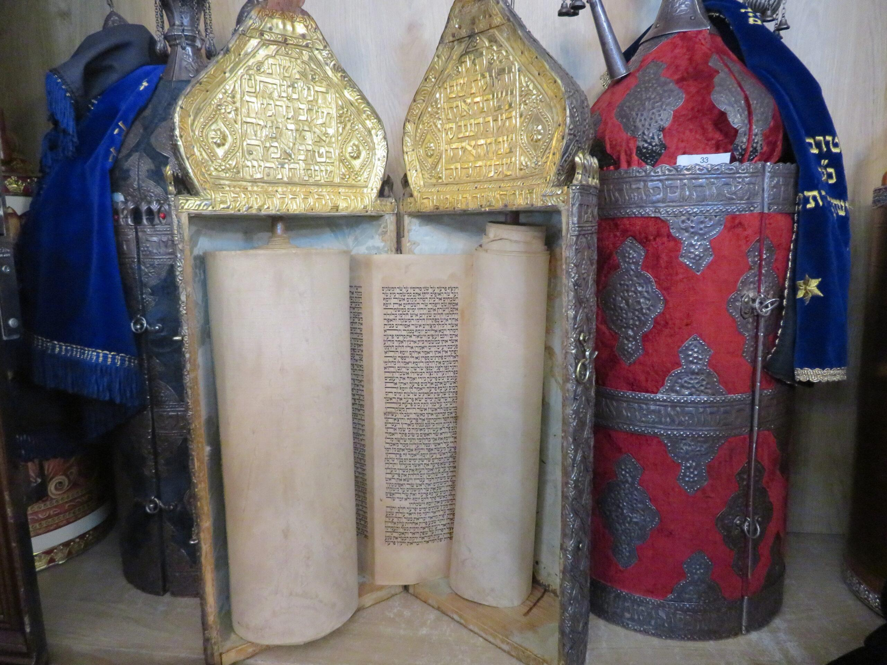

אני רוצה לכתוב סת"ם
ההכשרה הנדרשת לסופר סת"ם, היא בשני היבטים:
1. 1. מעשי.
2. 2. הלכתי.
החלק המעשי- פרקטי
החלק המעשי כולל את לימוד כתיבת הסת"ם בפועל,
ביצוע אותיות הסת"ם התנועות העגולות והמרובעות,
אחיזה נכונה של הקולמוס, סוג הקולמוס,
זוית הקולמוס והשלחן המדויקות,
מהו הדיו הטוב לכתיבה? דילול מדויק של הדיו והסמיכות הרצויה,
רמת לחות נכונה בחלל החדר, ועוד.
בחירת קלף
הבנה בטיב הקלף, מהו קלף טוב ובאיזה קלף אין ליגוע!
בעבר היו אומרים:
ש'סופר סת"ם טוב, זה סופר שיודע לכתוב על כל קלף'.
אך אם יורשה לי אני אדייק את הדברים מנסיוני ואומר:
ש'סופר סת"ם טוב, יודע מהיכן לקנות קלף שהוא אוהב ומתחבר אליו,
ומבין היטב היטב לאיזה קלף לא להתקרב'.
זהו חלק חשוב שאני משתדל להרחיב עליו בקורס,
ראשית אני נותן לתלמידים המון סוגי קלף לכתיבה,
מהמשובחים ועד אלו שאינם ראויים כלל,
קלפים שעירים וקטיפתיים גם יחד,
עד שבסוף הקורס התלמיד יודע ומבין,
מהו קלף חלק מדי שאינו נוח לכתיבה,
ומה הקלף שמתאים למהירות הכתיבה והנוחות שלו.
החלק ההלכתי:
החלק הזה דורש את לימוד הלכות הסת"ם,
אך דא עקא שהלכות אלו אינם מרוכזות במקום אחד,
חלק בסימן לב מסעיף א, עד סעיף לב, ובסימן לו,
ועוד בהלכות מגילה סימן תרצא, בחלק אורח חיים שבשלחן ערוך,
והשאר בהלכות מזוזה סימן רפח, ובהלכות ספר תורה בחלק יורה דעה שבשלחן ערוך.
ברם השלחן ערוך בחלק אורח חיים בהלכות תפילין בסימן לב,
ריכז כמעט את כל הלכות הסת"ם, הנוגעות לכל הכתיבה,
ובסימן לו הביא המשנה ברורה את כל דיני צורת האותיות, ולכן בוחנים הרבנים על סימנים אלו בלבד.
אולם לסופר חסר חומר חשוב בהלכות מגילה,
מזוזה, ספר תורה, שמות ה' ועוד.
הלימוד אצל הרב יוחאי אוחיון
לכן אצלנו במכון כל החומר מרוכז לספר קטן,
שחיבר הרב יוחאי אוחיון מנהל המכון,
חיבור קטן שיש בו הכל, הספר אינו נמכר בחנויות,
והוא מוענק לתלמידים כחלק מהציוד שניתן בקורס.
הנסיון אומר! כאשר שהחומר מובא ברור ובקצרה,
קל לתלמידים להיבחן עליו בסוף הקורס,
והחשוב מכל לקבל תעודת הסמכה של סופר סת"ם.
אצלנו ניתן דגש לשני החלקים:
המעשי- פרקטי, והחלק וההלכתי,
בכדי שיקבל התלמיד את כל מה שהוא צריך,
וברמה הכי גבוהה שקיימת,
בכדי לעסוק ולהצליח בעבודת קודש זו.
